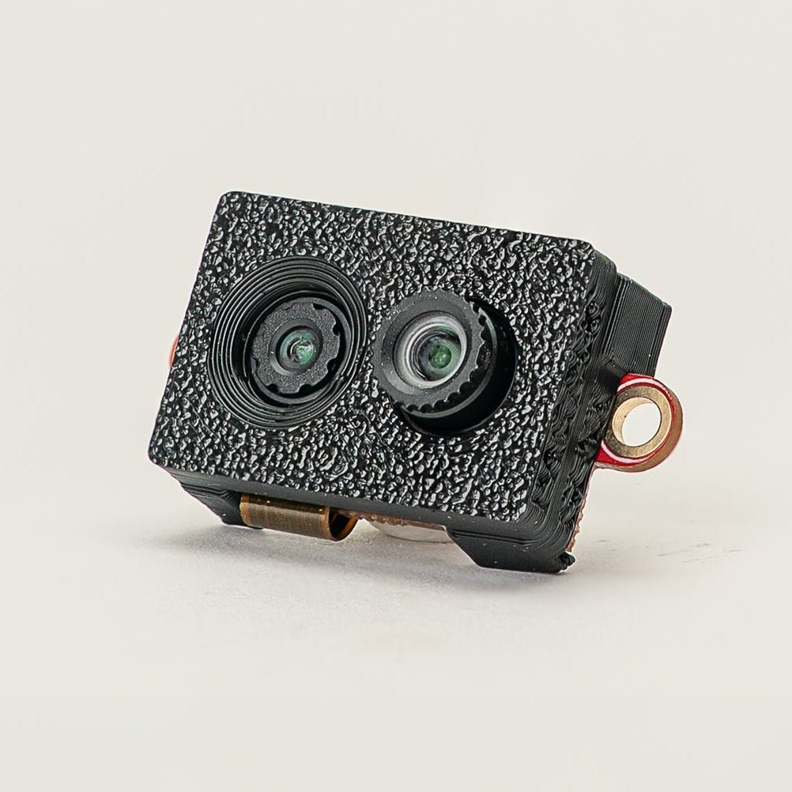

Cámara de eventos multiespectral¶
El módulo de cámara de eventos multiespectral combina el sensor de eventos GENX320 con un sensor de color de obturador global PAG7936 de 1 MP en un solo módulo: una canalización sincronizada de eventos + color para el seguimiento de objetos a alta velocidad, el seguimiento de LED, el flujo de fluidos y otras escenas dinámicas.
{kind=link}

Para ver la hoja de datos completa, las fotos y la información de pedidos, consulte la página de producto de la cámara de eventos multiespectral.
Nota
Compatible únicamente con la OpenMV N6.
Aspectos destacados¶
Sensor de eventos de 320x320, rango dinámico >140 dB, histogramas a 375 Hz+
Color PAG7936: 1280x800 @ 120 FPS, 640x400 @ 240 FPS
Marcas de tiempo de eventos sincronizadas con disparo de exposición compartido
Ve por debajo de 5 lux sin exposición automática
El consumo parte de unos ~3 mW para la transmisión de eventos
Orientado al seguimiento a alta velocidad, el seguimiento de LED y el flujo de fluidos/partículas
Uso¶
El sensor de color y el sensor de eventos GENX320 obtienen cada uno su propia instancia de csi.CSI. La primera llamada usa de forma predeterminada el sensor principal (el PAG7936); la segunda se vincula al GENX320 pasando cid= csi.GENX320. Reinicie por hardware el sensor de color con csi.CSI.reset (hard=True) para activar la alimentación, y configure el GENX320 con hard=False para que su controlador solo reprograme el chip sin volver a activar el reinicio.
El GENX320 genera 320x320 en modo histograma; el PAG7936 a csi.QVGA genera 320x200. La superposición básica de abajo recorta las 120 filas inferiores del fotograma del GENX320. Use la transformación de homografía (más abajo) para una superposición ajustada o un tamaño de fotograma del PAG7936 más grande.
Dos búfers temporales se mantienen constantes a lo largo del bucle de fotogramas: una paleta alfa de 256x1 almacenada como una image.Image para que los píxeles del histograma en la línea base de gris medio (128) se vuelvan transparentes y tanto los realces de eventos ON como las sombras de eventos OFF se vuelvan opacos, y un búfer de fotogramas del GENX320 preasignado con image.Image para que csi.CSI.snapshot (blocking=False, image=...) pueda rellenarlo en el sitio en cada iteración sin reasignar:
import time
import csi
import image
import math
# V-shaped alpha: pixels far from the baseline 128 become opaque.
alpha_pal = image.Image(256, 1, image.GRAYSCALE)
for i in range(256):
alpha_pal[i] = int(math.pow(abs(i - 128) / 128.0, 2) * 255)
# Setup the color camera sensor.
csi0 = csi.CSI()
csi0.reset(hard=True) # force hardware reset.
csi0.pixformat(csi.RGB565)
csi0.framesize(csi.QVGA)
csi1 = csi.CSI(cid=csi.GENX320)
csi1.reset(hard=False) # no hardware reset - just configure GENX320
csi1.pixformat(csi.GRAYSCALE)
csi1.framesize((320, 320))
csi1.brightness(128) # histogram baseline (default)
csi1.contrast(64) # per-event step
clock = time.clock()
img1 = image.Image(csi1.width(), csi1.height(), csi1.pixformat())
while True:
clock.tick()
img0 = csi0.snapshot()
csi1.snapshot(blocking=False, image=img1)
img0.draw_image(img1, 0, 0, color_palette=image.PALETTE_EVT_LIGHT,
alpha_palette=alpha_pal,
hint=image.BILINEAR)
print(clock.fps())
Cada iteración toma una captura de color bloqueante y una captura no bloqueante del GENX320. Image.draw_image compone entonces las dos: color_palette= image.PALETTE_EVT_LIGHT (o image.PALETTE_EVT_DARK para un fondo oscuro) asigna el histograma en escala de grises del GENX320 a una rampa de color, alpha_palette= mezcla cada píxel usando el mapa alfa en forma de v para que las regiones tranquilas de la escena dejen pasar la imagen de color, y hint= image.BILINEAR suaviza el escalado cuando el sensor de color funciona a una resolución mayor que el GENX320.
Los ajustes predefinidos de bias, el filtro AFK, la calibración de píxeles calientes y los ioctls del filtro STC del GENX320 funcionan todos de la misma manera en esta configuración de cámara dual: llámelos en csi1 después de csi.CSI.reset. Consulte las secciones siguientes para más detalles.
Alineación acelerada por GPU¶
Image.draw_image acepta un argumento transform=: una matriz de homografía 3x3 como un arreglo 2-D de ulab.numpy. En la OpenMV N6, la GPU ejecuta la proyección por píxel durante el mismo dibujado, por lo que el fotograma del GENX320 puede realinearse con la perspectiva de la cámara de color sin un paso de deformación independiente, lo cual es útil cuando los dos sensores tienen ópticas o campos de visión ligeramente distintos, o cuando la cámara de color funciona a una resolución mayor. Calibre la matriz por cámara con la herramienta de calibración de superposición GenX320, que muestra un tablero de ajedrez parpadeante para que el sensor de eventos produzca eventos en las esquinas sin ningún movimiento físico:
import time
import csi
import image
from ulab import numpy as np
import math
# Calibration matrix from the GenX320 Overlay Calibration tool.
m = np.array([
[2.000000, 0.000000, 0.000000],
[0.000000, 2.000000, 80.000000],
[0.000000, 0.000000, 1.000000],
])
alpha_pal = image.Image(256, 1, image.GRAYSCALE)
for i in range(256):
alpha_pal[i] = int(math.pow(abs(i - 128) / 128.0, 2) * 255)
# Setup the color camera sensor.
csi0 = csi.CSI()
csi0.reset(hard=True)
csi0.pixformat(csi.RGB565)
csi0.framesize(csi.VGA)
csi1 = csi.CSI(cid=csi.GENX320)
csi1.reset(hard=False)
csi1.pixformat(csi.GRAYSCALE)
csi1.framesize((320, 320))
csi1.brightness(128)
csi1.contrast(64)
clock = time.clock()
img1 = image.Image(csi1.width(), csi1.height(), csi1.pixformat())
while True:
clock.tick()
img0 = csi0.snapshot()
csi1.snapshot(blocking=False, image=img1)
img0.draw_image(img1, 0, 0, color_palette=image.PALETTE_EVT_LIGHT,
alpha_palette=alpha_pal,
hint=image.BILINEAR,
transform=m)
print(clock.fps())
Esta variante ejecuta la cámara de color a csi.VGA (640x480) y el GENX320 a su resolución nativa de 320x320: la homografía proyecta el fotograma más pequeño del GENX320 dentro del fotograma de color más grande como parte del dibujado, por lo que el factor de escalado queda integrado en la propia matriz en lugar de aplicarse por separado.
Detalles de la cámara de eventos¶
El GENX320 es un sensor de visión basado en eventos: en lugar de leer toda la matriz de 320x320 con un reloj de fotogramas fijo, cada píxel informa de «eventos» asíncronos en el instante en que detecta un cambio de brillo. Cada evento lleva una coordenada X/Y, una polaridad ON/OFF (de claro→oscuro o de oscuro→claro) y una marca de tiempo en microsegundos. De ahí provienen la precisión temporal en microsegundos del sensor, la ausencia de desenfoque de movimiento, el muy alto rango dinámico y el consumo de energía escalado según la actividad. Las escenas estáticas no generan datos.
El firmware de OpenMV expone el GENX320 a través de csi.CSI con cid= csi.GENX320. Hay dos modos de funcionamiento disponibles:
Modo histograma (predeterminado): los eventos se acumulan en el chip en contenedores por píxel y se informan como un fotograma de 320x320 en escala de grises a una tasa configurable (~20-350 FPS). El sensor se comporta como una cámara normal, por lo que todas las rutinas estándar de procesamiento de imágenes (
Image.find_blobs, paletas, etc.) funcionan directamente.Modo evento: los eventos en bruto se transmiten a un
ndarrayde numpy con marcas de tiempo completas en microsegundos, para aplicaciones que necesitan el detalle temporal en lugar de un fotograma con contenedores precalculados.
Modo histograma¶
En el modo histograma, el GENX320 genera fotogramas en escala de grises donde cada píxel codifica la actividad reciente de eventos en esa ubicación. Los píxeles por encima de la línea base de brillo son eventos ON (el brillo aumenta) y los que están por debajo son eventos OFF (el brillo disminuye). El brillo de línea base predeterminado es 128 y el paso de contraste por evento es 16: aumente el contraste para que los eventos resalten:
import csi
import time
csi0 = csi.CSI(cid=csi.GENX320)
csi0.reset()
csi0.pixformat(csi.GRAYSCALE)
csi0.framesize((320, 320))
csi0.brightness(128) # baseline (default 128)
csi0.contrast(16) # per-event step
csi0.framerate(50) # 20-350 FPS
clock = time.clock()
while True:
clock.tick()
img = csi0.snapshot()
print(clock.fps())
csi.CSI.brightness, csi.CSI.contrast y csi.CSI.framerate son los tres controles que dan forma a la salida del histograma.
Salida coloreada¶
Establezca csi.CSI.color_palette en image.PALETTE_EVT_LIGHT para un fondo claro o en image.PALETTE_EVT_DARK para uno oscuro: el controlador emite fotogramas RGB565 usando la paleta directamente:
csi0.color_palette(image.PALETTE_EVT_LIGHT)
Calibración de píxeles calientes¶
Los sensores de eventos acumulan «píxeles calientes» que se disparan de forma espuria. Ejecute csi.IOCTL_GENX320_CALIBRATE contra una escena estática para deshabilitarlos. El controlador crea un recuento de impactos por píxel de 320x320, calcula la media y la desviación estándar, y deshabilita cualquier píxel cuyo recuento esté por encima de mean + sigma * stddev; luego los píxeles deshabilitados dejan de emitir eventos a nivel del sensor.
Dos parámetros controlan la calibración:
event_count: cuántos eventos contabilizar antes de calcular las estadísticas. El bucle captura fotogramas hasta que el total acumulado de eventos supera este presupuesto. Recuentos más altos dan una estimación más fiable a costa de un tiempo de calibración más largo.10000es un buen punto de partida.sigma: multiplicador de umbral sobre la desviación estándar. Los valores más bajos son más agresivos (más píxeles deshabilitados); los valores más altos son más conservadores.0.5es un buen valor predeterminado.
Apunte primero el sensor a una escena estática para que los eventos provocados por el movimiento no se contabilicen en contra de píxeles que en realidad están bien:
csi0.snapshot(time=5000) # let the user steady the camera
disabled = csi0.ioctl(csi.IOCTL_GENX320_CALIBRATE, 10000, 0.5)
print(f"disabled {disabled} hot pixels")
Filtro antiparpadeo (AFK)¶
Las fuentes de luz periódicas (fluorescentes, pantallas accionadas por LED) generan grandes volúmenes de eventos redundantes. El filtro AFK rechaza los eventos cuyo píxel conmuta a una frecuencia dentro de una banda: habilítelo mediante csi.IOCTL_GENX320_SET_AFK con los límites de la banda en hercios:
csi0.ioctl(csi.IOCTL_GENX320_SET_AFK, 1, 130, 160) # 130-160 Hz
csi0.ioctl(csi.IOCTL_GENX320_SET_AFK, 0) # disable
Ajustes predefinidos de bias¶
Cada píxel del GenX320 ejecuta un front-end analógico con varios bias configurables. En conjunto, gobiernan la sensibilidad, el ruido, el ancho de banda del píxel y la tasa de eventos: la combinación correcta depende de la escena. Los bias individuales son:
DIFF_ON: el umbral de contraste del comparador positivo. Un píxel emite un evento ON cuando su iluminación logarítmica ha aumentado esta cantidad. Más bajo = más sensible a las transiciones hacia el brillo.
DIFF_OFF: el umbral de contraste del comparador negativo (la contraparte simétrica para los eventos OFF). Más bajo = más sensible a las transiciones hacia la oscuridad.
FO: la frecuencia de corte de paso bajo del píxel. Más alto = mayor ancho de banda del píxel (respuesta más rápida, menor latencia) pero más actividad de ruido de fondo.
HPF: la frecuencia de corte de paso alto. Más alto = mayor rechazo de los cambios de brillo lentos; solo las transiciones rápidas llegan a los comparadores. Útil para ignorar la deriva ambiental.
REFR: el periodo refractario. Después de que un píxel se dispara, permanece en reinicio durante este tiempo antes de poder dispararse de nuevo. Más alto = mayor tiempo muerto, útil para limitar la tasa de eventos por píxel.
Después de csi.CSI.reset, el controlador aplica csi.GENX320_BIASES_LOW_NOISE, no csi.GENX320_BIASES_DEFAULT: los valores predeterminados de la hoja de datos emiten una tasa de eventos de fondo mucho más alta, por lo que se usa LOW_NOISE como punto de partida para mantener la transmisión tranquila. Llame a csi.IOCTL_GENX320_SET_BIASES con un ajuste predefinido distinto cuando la aplicación necesite más sensibilidad o ancho de banda.
csi.IOCTL_GENX320_SET_BIASES aplica uno de cinco ajustes predefinidos:
csi.GENX320_BIASES_DEFAULT: valores predeterminados de la hoja de datos del GenX320. Sensibilidad, ruido y ancho de banda equilibrados para escenas generales.csi.GENX320_BIASES_LOW_LIGHT: ambos umbrales de contraste relajados para mayor sensibilidad, FO reducido para mantener bajo el ruido y HPF puesto a 0 para que los cambios de brillo lentos sigan registrándose; una escena con poca luz genera pocos eventos por sí sola, así que queremos que pasen tantos como sea posible.csi.GENX320_BIASES_ACTIVE_MARKER: ajustado para el seguimiento de LED parpadeantes de alto contraste. Umbrales de contraste elevados para que solo las transiciones nítidas se disparen; FO y HPF aumentados al máximo para maximizar el ancho de banda del píxel y rechazar cualquier deriva ambiental lenta; REFR llevado a 0 para que cada flanco de parpadeo se capture de forma consecutiva. El resultado: una transmisión que es casi toda de flancos de LED, fácil de seguir.csi.GENX320_BIASES_LOW_NOISE: valor predeterminado del controlador. Ambos umbrales de contraste elevados respecto aDEFAULT(menos sensible) y FO reducido (píxel más lento = píxel más silencioso). Lo mejor para escenas estáticas o lentas donde los eventos falsos dominarían de otro modo.csi.GENX320_BIASES_HIGH_SPEED: FO aumentado para que cada píxel pueda responder más rápido, HPF elevado para rechazar la deriva de brillo lenta y REFR elevado para que un único flanco en movimiento rápido no inunde la lectura; el mayor tiempo muerto mantiene acotado el volumen de eventos bajo movimiento intenso.
Anule bias individuales con csi.IOCTL_GENX320_SET_BIAS más uno de csi.GENX320_BIAS_DIFF_ON, csi.GENX320_BIAS_DIFF_OFF, csi.GENX320_BIAS_FO, csi.GENX320_BIAS_HPF o csi.GENX320_BIAS_REFR y un valor de DAC. Cada bias se establece de forma independiente: elija un ajuste predefinido como punto de partida y luego ajuste los bias que su escena necesite:
csi0.ioctl(csi.IOCTL_GENX320_SET_BIASES, csi.GENX320_BIASES_LOW_LIGHT)
csi0.ioctl(csi.IOCTL_GENX320_SET_BIAS, csi.GENX320_BIAS_HPF, 20)
Seguimiento¶
Dado que la salida en modo histograma es simplemente una imagen en escala de grises, el seguimiento de manchas (blobs) normal funciona directamente. Para rastrear un LED de marcador activo, cargue el ajuste predefinido de bias de marcador activo y busque manchas (blobs) en el extremo brillante del histograma:
import csi
import time
csi0 = csi.CSI(cid=csi.GENX320)
csi0.reset()
csi0.pixformat(csi.GRAYSCALE)
csi0.framesize((320, 320))
csi0.brightness(128)
csi0.contrast(16)
csi0.framerate(200)
csi0.ioctl(csi.IOCTL_GENX320_SET_BIASES, csi.GENX320_BIASES_ACTIVE_MARKER)
clock = time.clock()
while True:
clock.tick()
img = csi0.snapshot()
for blob in img.find_blobs([(120, 140)], invert=True,
pixels_threshold=2, area_threshold=4,
merge=True):
img.draw_detection(blob)
print(clock.fps())
Modo evento¶
El modo evento omite el histograma del chip y transmite los eventos en bruto a un ndarray de numpy. Cada evento es una fila de seis columnas uint16:
[0]tipo de evento: ver más abajo[1]marca de tiempo en segundos[2]marca de tiempo en milisegundos[3]marca de tiempo en microsegundos[4]coordenada X, 0-319[5]coordenada Y, 0-319
El controlador emite seis tipos de evento en la columna [0]:
csi.PIX_OFF_EVENT: un píxel detectó una disminución del brillo (se cruzó el umbral del comparadorDIFF_OFF). X/Y apuntan al píxel que se disparó.csi.PIX_ON_EVENT: un píxel detectó un aumento del brillo (se cruzó el umbralDIFF_ON). X/Y apuntan al píxel.csi.EXT_TRIGGER_FALLING: el pin de disparo externo del sensor vio un flanco descendente. X/Y no se usan.csi.EXT_TRIGGER_RISING: el pin de disparo externo del sensor vio un flanco ascendente. X/Y no se usan.csi.RST_TRIGGER_FALLING: disparo de reinicio de píxel, flanco descendente. X/Y no se usan. El firmware no lo genera en este momento.csi.RST_TRIGGER_RISING: disparo de reinicio de píxel, flanco ascendente. X/Y no se usan. El firmware no lo genera en este momento.
La entrada de disparo externo del GENX320 está conectada a la línea de sincronización de fotogramas de la cámara, que también se enruta a P10 tanto en el procesador como en el conector de pines: accione P10 para inyectar flancos de sincronización en la transmisión de eventos y captúrelos como eventos EXT_TRIGGER_RISING / EXT_TRIGGER_FALLING junto con los datos de los píxeles.
A la mayoría de las aplicaciones solo les importan PIX_OFF_EVENT y PIX_ON_EVENT; los tipos de disparo le permiten correlacionar los eventos con señales de temporización externas.
Asigne el búfer de eventos con la forma (EVT_res, 6) donde EVT_res es una potencia de dos entre 1024 y 65536, y luego entre en modo evento mediante csi.IOCTL_GENX320_SET_MODE con csi.GENX320_MODE_EVENT y el tamaño del búfer. Lea los eventos con csi.IOCTL_GENX320_READ_EVENTS, que rellena el búfer hasta su capacidad y devuelve el número de filas válidas.
Image.draw_event_histogram rasteriza los eventos en una imagen en escala de grises: por cada evento ON suma contrast al contenedor; por cada evento OFF lo resta. clear=True reinicia primero la imagen a brightness; clear=False acumula a lo largo de muchas llamadas:
import csi
import image
import time
from ulab import numpy as np
img = image.Image(320, 320, image.GRAYSCALE)
events = np.zeros((2048, 6), dtype=np.uint16)
csi0 = csi.CSI(cid=csi.GENX320)
csi0.reset()
csi0.ioctl(csi.IOCTL_GENX320_SET_MODE, csi.GENX320_MODE_EVENT, events.shape[0])
clock = time.clock()
while True:
clock.tick()
n = csi0.ioctl(csi.IOCTL_GENX320_READ_EVENTS, events)
img.draw_event_histogram(events[:n], clear=True, brightness=128, contrast=64)
img.flush()
print(n, clock.fps())
Los ajustes predefinidos de bias del modo histograma, el filtro AFK y los ioctls de calibración de píxeles calientes funcionan todos de la misma manera en modo evento: llámelos después de csi.IOCTL_GENX320_SET_MODE.
Filtrado por polaridad¶
Segmente el arreglo de eventos con ulab para conservar solo los eventos ON (movimiento hacia un estado más brillante) o solo los eventos OFF:
TARGET = csi.PIX_ON_EVENT # or csi.PIX_OFF_EVENT
events_slice = events[:n]
indices = np.nonzero(events_slice[:, 0] == TARGET)[0]
if len(indices):
target_events = np.take(events_slice, indices, axis=0)
img.draw_event_histogram(target_events, clear=True,
brightness=128, contrast=64)
Acumulación de exposición prolongada¶
Establezca clear=False para seguir apilando eventos en la misma imagen a lo largo de muchos fotogramas: el resultado es una visualización de estela de movimiento. Reinicie periódicamente para comenzar una nueva exposición:
EXPOSURE_FRAMES = 30
i = 0
while True:
n = csi0.ioctl(csi.IOCTL_GENX320_READ_EVENTS, events)
clear = (i % EXPOSURE_FRAMES) == 0
img.draw_event_histogram(events[:n], clear=clear, brightness=128, contrast=64)
img.flush()
i += 1
Procesamiento a alta velocidad¶
Elimine la visualización para liberar CPU para el procesamiento de eventos. Imprima estadísticas solo cada N iteraciones: lanzar una línea de impresión en cada iteración se convierte en el cuello de botella a tasas de eventos altas:
csi0 = csi.CSI(cid=csi.GENX320)
csi0.reset()
csi0.ioctl(csi.IOCTL_GENX320_SET_MODE, csi.GENX320_MODE_EVENT, events.shape[0])
clock = time.clock()
i = 0
while True:
clock.tick()
n = csi0.ioctl(csi.IOCTL_GENX320_READ_EVENTS, events)
i += 1
if not i % 10:
print(f"{n} events {clock.fps()} fps")
Filtro de contraste espacio-temporal (STC)¶
Un borde de contraste en movimiento real tiende a desencadenar una ráfaga ruidosa de eventos en el mismo píxel dentro de una ventana de tiempo corta: el desajuste de píxeles y el ruido analógico producen eventos adicionales alrededor de la transición genuina que no son útiles para la aplicación. El filtro STC es un postprocesamiento en el chip que conserva solo uno (o unos pocos) eventos por ráfaga y descarta el resto.
Implementa tres estrategias, seleccionadas mediante csi.IOCTL_GENX320_SET_STC y una constante GENX320_STC_*. Cada modo se define por los eventos que reenvía de una ráfaga:
Modo |
Conserva |
Descarta |
|---|---|---|
todos los eventos |
nada |
|
el segundo evento de una ráfaga |
el primero + los eventos posteriores |
|
el primer evento de una ráfaga |
los eventos subsiguientes |
|
el primer flanco + los flancos subsiguientes |
solo el ruido redundante |
En detalle:
csi.GENX320_STC_DISABLE: filtro desactivado, todos los eventos pasan (predeterminado).csi.GENX320_STC_ONLY: conserva el segundo evento de una ráfaga. Parámetro:stc_threshold(ms). Si un nuevo evento en un píxel llega dentro destc_thresholdrespecto a un evento previo, se considera el «segundo» de una ráfaga y se reenvía; el primer evento y cualquier evento posterior en la misma ráfaga se filtran. Lo mejor cuando se desea una transición confirmada por ruido en lugar del primerísimo impacto.csi.GENX320_STC_TRAIL_ONLY: conserva el primer evento de una ráfaga. Parámetro:trail_threshold(ms). Después de que un píxel se dispara, los eventos posteriores en el mismo píxel se descartan hasta que haya transcurridotrail_threshold. Preserva la temporización precisa del flanco de ataque: útil cuando el momento del cambio de polaridad importa más que la confirmación de la ráfaga.csi.GENX320_STC_TRAIL: combina ambos. Parámetros:stc_thresholdytrail_threshold(ambos en ms). Conserva el flanco de ataque según el modo Trail más los flancos subsiguientes según el modo STC, de modo que aún pasan múltiples eventos de una ráfaga: mayor rendimiento de eventos que los filtros de modo único pero con la señal más rica.
Los dos umbrales deben mantenerse aproximadamente dentro de una relación de 13:1: el sensor rechaza las configuraciones donde uno es más de ~13 veces el otro:
csi0.ioctl(csi.IOCTL_GENX320_SET_STC, csi.GENX320_STC_TRAIL, 1, 2)
csi0.ioctl(csi.IOCTL_GENX320_SET_STC, csi.GENX320_STC_DISABLE)
Profundidad del búfer¶
Cuando las tasas de eventos se disparan, la canalización predeterminada de triple búfer favorece el último fotograma y descarta los antiguos. Aumente la profundidad de la FIFO mediante csi.CSI.framebuffers para poner los eventos en cola en su lugar, a costa de procesar datos ligeramente más antiguos cuando el host se queda atrás:
csi0.framebuffers(10) # FIFO depth, > 3 enables queueing
Transmisión y visualización en escritorio¶
Para la visualización GUI en tiempo real en un PC host, la herramienta de transmisión de eventos GenX320 del repositorio openmv-projects empareja la cámara con un front-end de DearPyGui. La GUI del PC ejecuta dos visualizaciones una al lado de la otra: un lienzo de acumulación de eventos (la misma idea que Image.draw_event_histogram pero con paletas seleccionables y modos de ventana deslizante frente a autoborrado) y un mapa de frecuencia por píxel impulsado por un filtro de paso de banda IIR, útil para detectar señales periódicas (ventiladores giratorios, LED parpadeantes, etc.) directamente en la transmisión de eventos.
Incluye dos scripts de transmisión en la cámara:
Modo procesado (
genx320_event_mode_streaming_on_cam.py): la cámara decodifica los eventos concsi.IOCTL_GENX320_READ_EVENTSy transmite cada fila como 12 bytes por USB ([0]tipo,[1]seg,[2]ms,[3]us,[4]x,[5]y). Fácil de consumir en el PC porque el formato de cable coincide con el formato ndarray de la cámara.Modo en bruto (
genx320_raw_event_mode_streaming_on_cam.py): la cámara transmite las palabras de evento empaquetadas nativas de 32 bits del chip a través decsi.IOCTL_GENX320_READ_EVENTS_RAW. Eso son 4 bytes por evento frente a 12 en el modo procesado (unas 3 veces menos datos por USB), por lo que se alcanza una tasa de eventos ~3 veces mayor cuando el enlace es el cuello de botella. El PC decodifica las palabras empaquetadas de vuelta a la misma disposición de eventos de 6 columnas usando numpy vectorizado, de modo que el código del visualizador posterior es idéntico.
El modo en bruto es el predeterminado en la GUI porque el rendimiento del USB es la restricción limitante a las tasas que el GenX320 puede producir; cambie al modo procesado si necesita conectar lógica de procesamiento al script de la cámara.